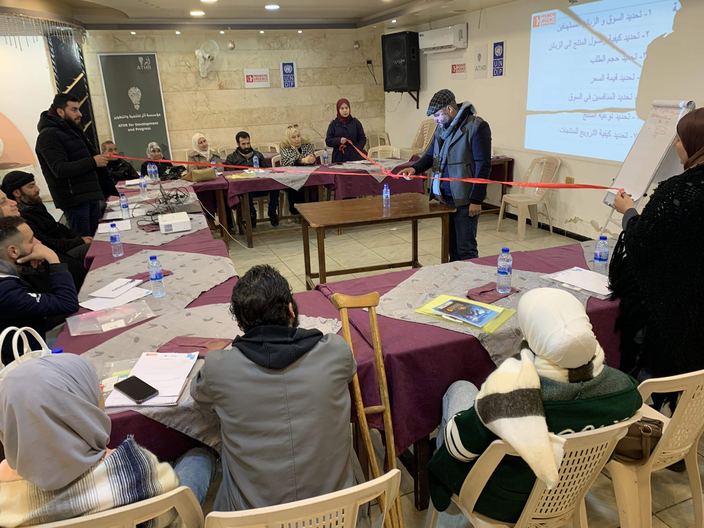
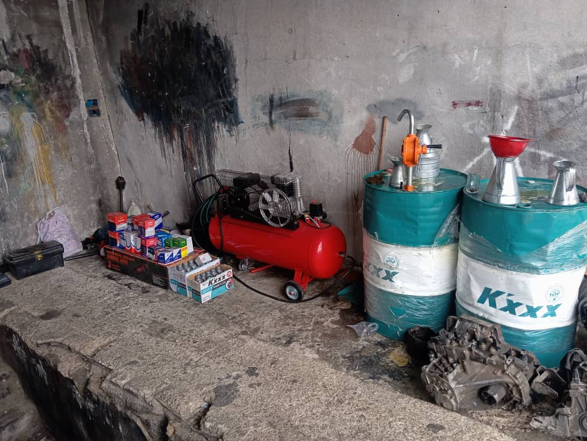
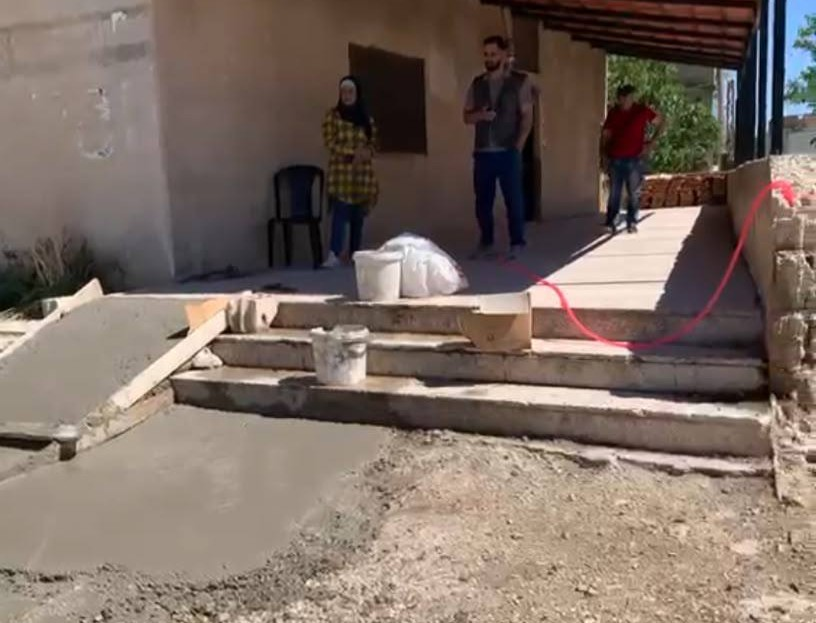
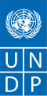
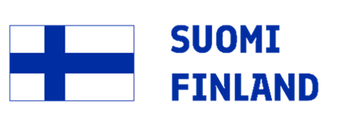

سبل العيش وتمكين الأشخاص ذوي الإعاقة
مشروع يعكس التزام مؤسسة أثر بتحويل الدعم الإنساني إلى أثر تنموي ملموس، من خلال التمكين الاقتصادي والاجتماعي للأشخاص ذوي الإعاقة وأسرهم، وتعزيز مشاركتهم الفاعلة في المجتمع المحلي.
عن مؤسسة أثر والمشروع
صياغة مؤسساتية تعكس قوة الأثر والشراكات.
مؤسسة أثر للتنمية والتطوير
مؤسسة تعمل بمنهج تنموي تشاركي يركز على بناء القدرات، وتمكين الفئات الأشد هشاشة، وتحويل التدخلات إلى مسارات أكثر استدامة.
هدف المشروع العام
تعزيز التمكين الاقتصادي والاجتماعي للأشخاص ذوي الإعاقة وأسرهم، عبر دعم سبل العيش وإعادة تأهيل بيئة مجتمعية حاضنة.
الفئة المستهدفة
أشخاص ذوو إعاقة من أنماط مختلفة: حركية، سمعية، بصرية، ومتعددة، مع مراعاة الهشاشة الاقتصادية.
منطق التدخل
الجمع بين منح إنتاجية ونقد مقابل العمل لتأمين دخل مباشر، وفي الوقت نفسه خلق منفعة مجتمعية مستدامة.
النطاق الجغرافي
وصل المشروع إلى خمس محافظات سورية، مع تنفيذ مباشر في خان أرنبة – القنيطرة.
منهجية التنفيذ
اعتمد المشروع منهجية دقيقة متعددة المراحل لضمان جودة الاستهداف ورفع فاعلية التدخل.
المسح والتقييم
تنفيذ 50 زيارة منزلية، تحليل الاحتياجات الاجتماعية والاقتصادية، وتقدير قابلية الاستفادة.
الاختيار والفرز
فرز 22 مستفيداً نهائياً وفق معايير الهشاشة والجدوى والقدرة على الاستفادة من التدخل.
التدخل المزدوج
تنفيذ سبل العيش عبر المنح، وتنفيذ برنامج النقد مقابل العمل لإعادة تأهيل مركز تمكن.
المتابعة والإغلاق
زيارات ميدانية كل 15 يوم، متابعة فنية مستمرة، وتقييم نهائي في شهر تموز 2026.
برنامج سبل العيش
مشاريع صغيرة متنوعة صممت لتناسب البيئة المحلية، وتدعم الاستقلال الاقتصادي.
التدريب
12 مستفيداً تلقوا تدريباً لمدة 4 أيام، مع تطبيق عملي في إدارة المشاريع والتسويق والإدارة المالية ودراسة الجدوى.
قيمة المنحة
2400 دولار لكل مشروع، بإجمالي تمويل للمنح بلغ 21,600 دولار أمريكي.
المتابعة
زيارات ميدانية دورية كل 15 يوماً لضمان جودة التنفيذ ودعم الاستمرارية.
الاستمرارية
حققت المشاريع نسبة استمرارية 100% حتى نهاية المشروع وفق المتابعة الميدانية.
أنواع المشاريع الممولة
تربية مواشي
مشروع يحقق دخلاً متدرجاً ويستفيد من الخبرة المحلية.
بقالية
خيار عملي يلائم الاحتياج اليومي للسوق المحلي.
صيانة إلكترونيات
منفعة خدمية مطلوبة في المجتمع المحلي.
محل بهارات
مشروع صغير بتكلفة مدروسة وهوامش حركة جيدة.
برنامج النقد مقابل العمل
تدخل يستهدف تحويل الحافز النقدي إلى قيمة مجتمعية ملموسة من خلال تأهيل مركز "تمكن".
عدد المستفيدين
13 مستفيداً تلقوا تدريباً لمدة يومين في السلامة المهنية وآليات العمل قبل البدء بالتنفيذ.
الحوافز النقدية
360 دولاراً لكل مستفيد، بإجمالي حوافز 4,680 دولاراً أمريكياً.
موازنة التأهيل
5,000 دولار مخصصة لأعمال الترميم والتجهيز والشراء والتأثيث.
الإجمالي
إجمالي تدخل برنامج النقد مقابل العمل بلغ 9,680 دولاراً أمريكياً.
الأعمال المنفذة في مبادرة أعطونا الأمل
الجدول الزمني العام للمشروع
تسلسل زمني يوضح كيف انتقل المشروع من التقييم إلى الإغلاق.
التقييم
تنفيذ الزيارات المنزلية وتحليل الاحتياجات الاجتماعية والاقتصادية.
الاختيار
فرز المستفيدين النهائيين وفق معايير الهشاشة والجدوى.
التدريب
تنفيذ تدريب سبل العيش وتدريب النقد مقابل العمل.
تنفيذ المنح
شراء المعدات والبدء الفعلي بالمشاريع الصغيرة المدرة للدخل.
التأهيل (CfW)
أعمال تأهيل مركز تمكن وإعادة تنظيمه كمركز مجتمعي خدمي.
الإغلاق والتقييم النهائي
استكمال التوثيق، قياس النتائج، وإعداد التقرير الختامي.
الأثر العام للمشروع
الأثر لا يُقاس فقط بالأرقام، بل بقدرته على خلق فرص وتوسيع المشاركة.
الأثر الاقتصادي
- إنشاء 9 مشاريع صغيرة مدرة للدخل.
- تعزيز قدرة 22 مستفيداً على توليد دخل مباشر.
- تمويل مباشر للمنح بقيمة 21,600 دولار.
الأثر الاجتماعي
- تعزيز دمج الأشخاص ذوي الإعاقة في المجتمع المحلي.
- تحسين الوصول إلى فرص المشاركة والخدمة.
- رفع الثقة والاعتماد على الذات لدى المستفيدين.
الأثر المؤسسي
- إنشاء مركز "تمكن" كمرفق مجتمعي مستدام.
- تجسيد نموذج تدخل مزدوج أكثر فاعلية.
- تعزيز الشراكات مع PUI وUNDP والجهات الداعمة.
المؤشرات المالية والتنفيذية
ملخص واضح ومباشر يسهّل على القارئ التقاط الصورة الرقمية للمشروع.
معرض الصور
توثيق بصري للزيارات المنزلية، التدريب، المشاريع الصغيرة، وأعمال مركز تمكن.



شركاء النجاح
شراكة استراتيجية أسهمت في تحقيق أهداف المشروع.


مؤسسة أثر لا تقدم تدخلاً مؤقتاً، بل تبني أثراً قابلًا للاستمرار
من خلال هذا المشروع، برهنت مؤسسة أثر للتنمية والتطوير على قدرتها في تنفيذ تدخلات مركبة، تجمع بين التمكين الاقتصادي، والحوكمة الشفافة، والتأهيل المجتمعي، ضمن شراكة فعّالة مع PUI وUNDP وبتمويل من الحكومة الفنلندية.